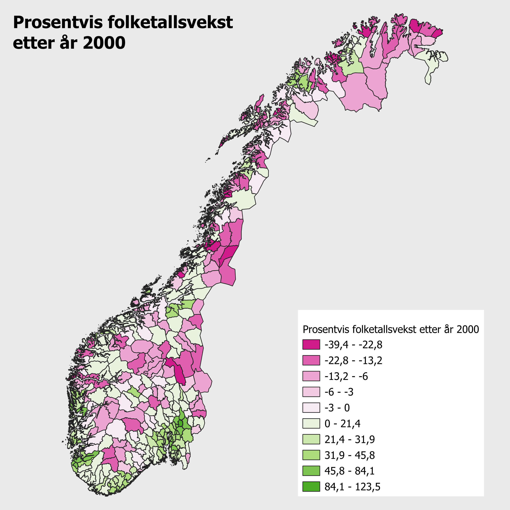
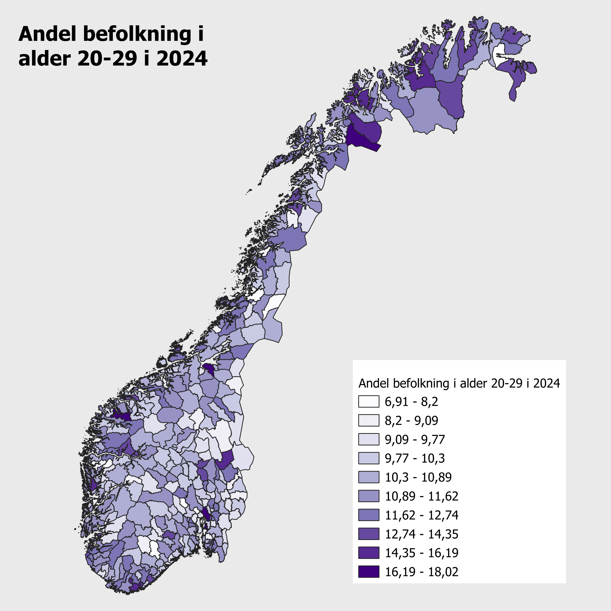
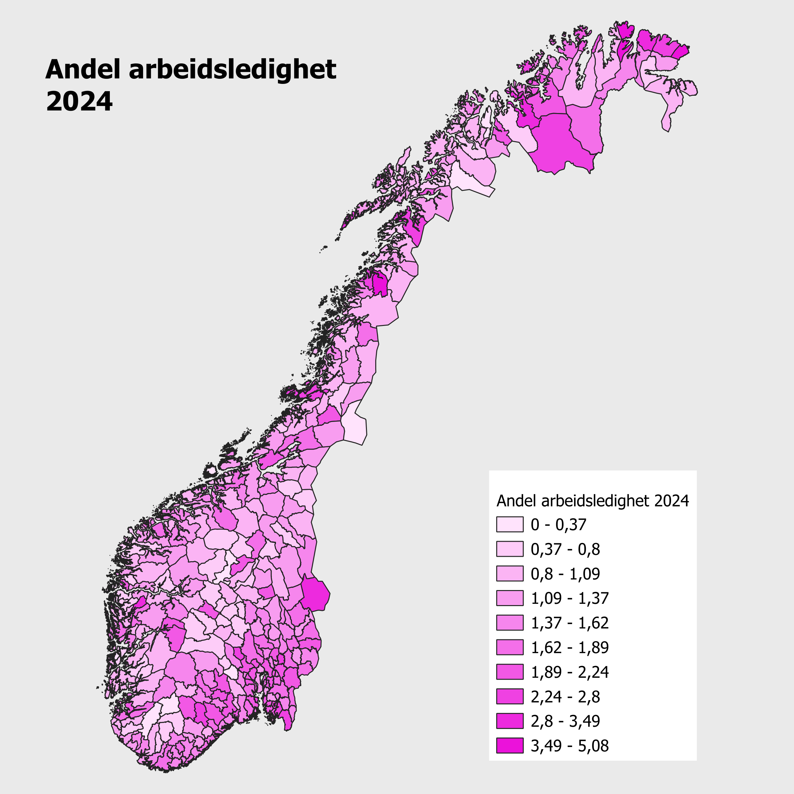
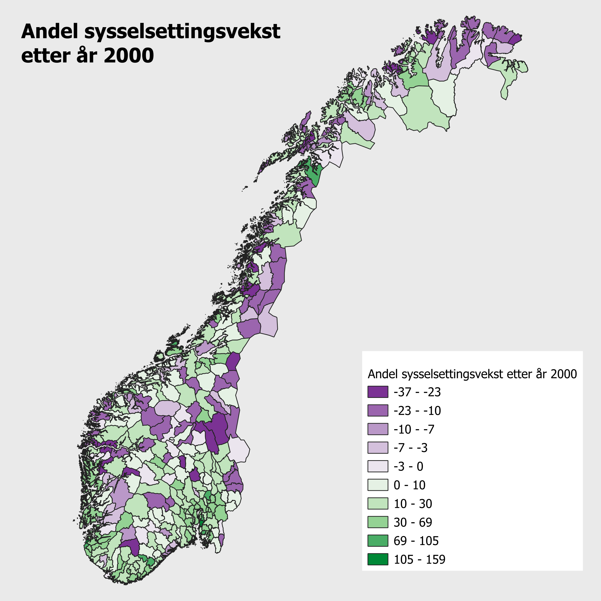
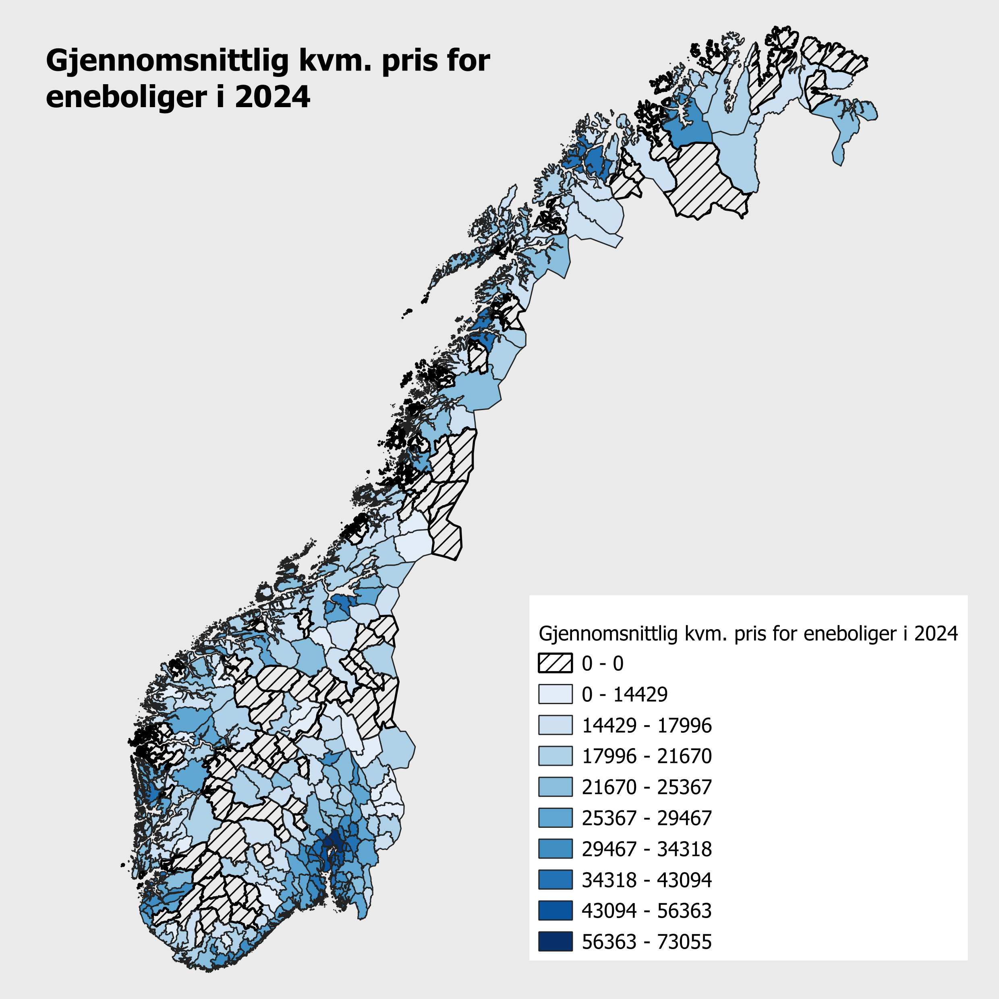
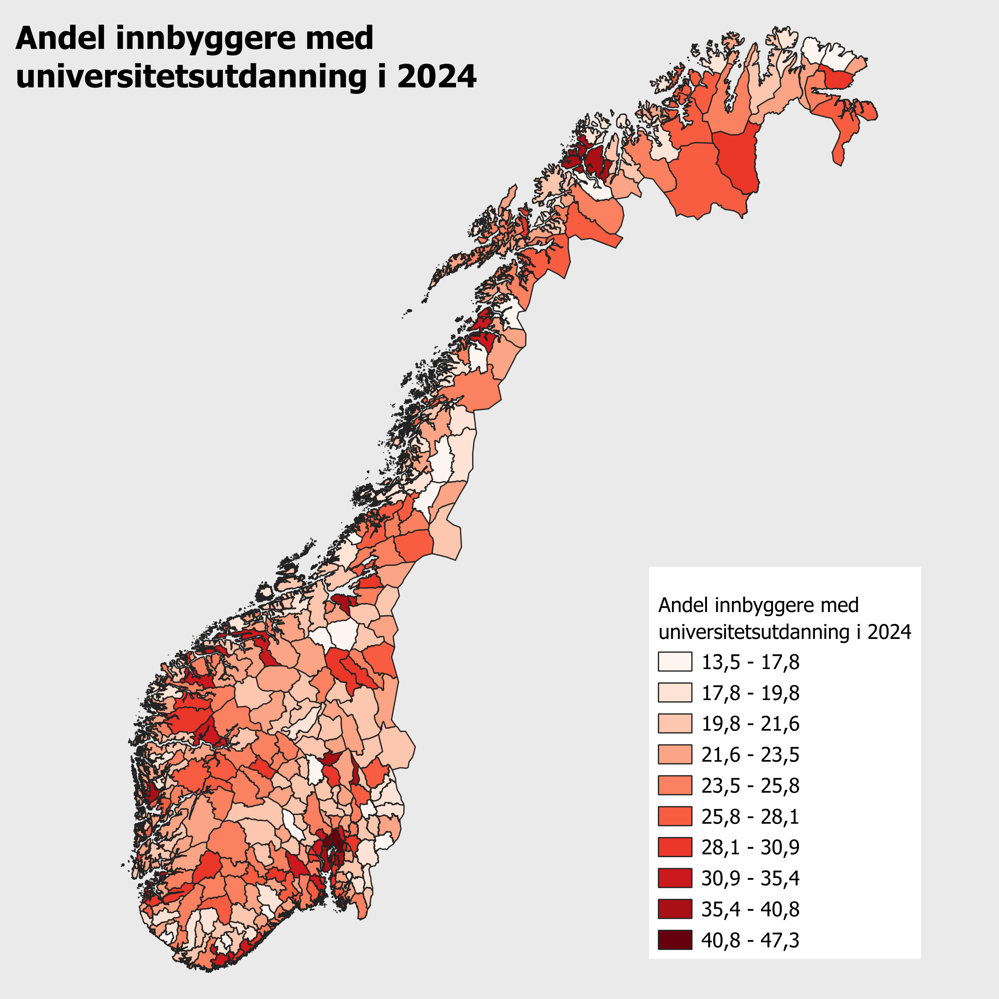
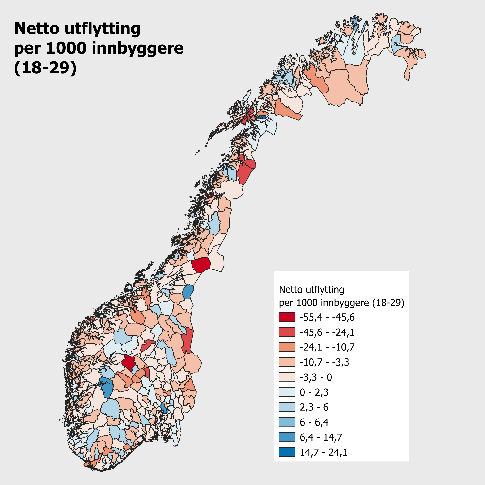
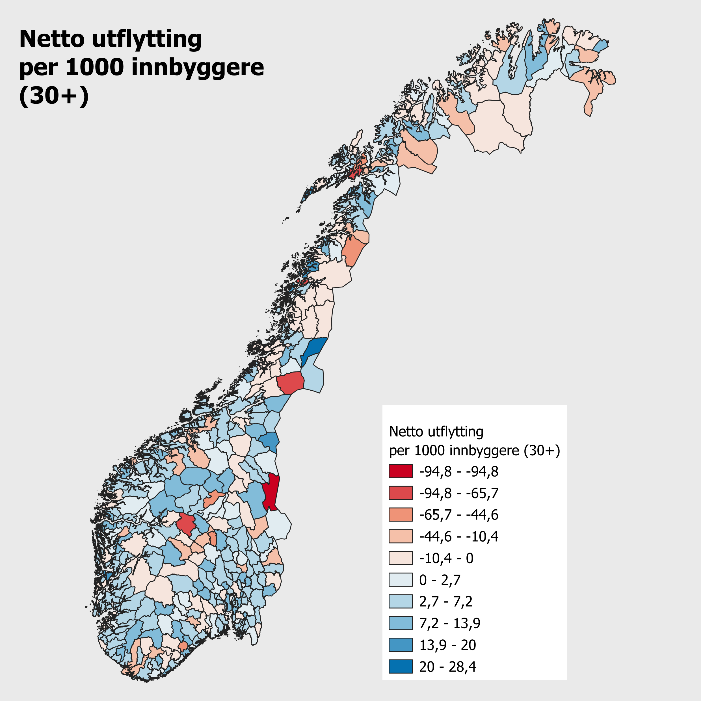
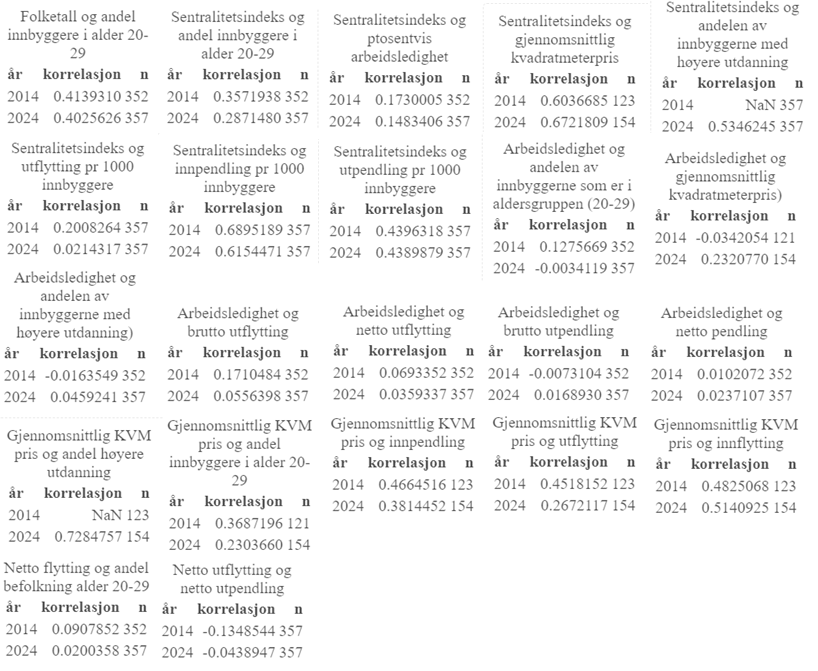

Tekst til oppgaven
Oppgave 2
Folketallsutvikling


Kartet viser prosentvis folketallsvekst i norske kommuner etter år 2000. Fargene illustrerer utviklingen, der grønne nyanser representerer positiv vekst og rosa nyanser viser negativ utvikling. Mange kommuner har hatt nedgang i folketallet, særlig de som ligger langt fra større byer og derfor regnes som mindre sentrale.
Grafene har vi delt kommunene inn i sentralitetsklassene fra 1 til 6, der klasse 1 er mest sentral og klasse 6 minst. På den andre siden ser vi at kommunene med sterk grønnfarge er de største byene i Norge og områdene rundt dem. Mindre byer har også grønn farge, men i svakere nyanser. Dette gjenspeiles i grafen, der klasse 1, 2 og 3 har hatt den sterkeste veksten, klasse 4 har hatt noe vekst, mens klasse 5 har hatt en mer svingende utvikling.
Befolkningsutvikling 20-29


Kartet viser andelen av befolkningen i aldersgruppen 20-29 år i norske kommuner for året 2024. De mørkeste lilla nyansene markerer kommuner med høyest andel unge voksne, som for eksempel Rena, Bardu og Målselv. Dette kan henge sammen med tilstedeværelsen av store militærbaser i disse områdene. Også kommuner med store byer og gode studiemuligheter har en høy andel unge, noe som understreker betydningen av utdanningstilbud og arbeidsmuligheter.
Grafen viser utviklingen i andelen unge fra år 2000 til 2024, fordelt på sentralitetsklassene. Vi ser naturlige svingninger i kurvene, som kan skyldes variasjoner i fødselstall. I 2024 har klasse 1 og 2 den høyesre andelen unge, noe som samsvarer med det vi ser på kartet. Det som er interresant, er at kommuner med militærbaser, til tross for sin høye andel unge, ikke skiller seg ut på grafen. Dette kan skyldes at disse kommunene inngår i klasser med mange andre kommuner, slik at det ikke får like stor visuell betydning i grafen.
Andel arbeidsledighet


Kartet viser andel arbeidsledighet i norske kommuner for året 2024, mens grafen illustrerer utviklingen i arbeidsledighet fra 2008 til 2024 fordelt på sentralitetsklassene. Sammenlignet med tidligere kart er det vanskeligere å se tydelige mønstre her, men enkelte områder skiller seg ut. I Finnmark ser vi flere kommuner med sterk rosa farge, som indikerer høy arbeidsledighet. Det samme gjelder deler av Østlandet. En svakhet ved kartet er at det inneholder mange klasser med korte intervaller, noe som gjør det utfordrende å skille fargene fra hverandre og dermed tolke dataene visuelt.
Grafen viser at arbeidsledigheten har variert fra år til år, med et tydelig hopp i 2020 da koronapandemien førte til nedstengning av samfunnet. Allerede i 2021 ser vi at arbeidsledigheten sank igjen, noe som kan tyde på en relativ rask økonomisk gjenoppretting.
Sysselsettingsvekst


Kartet viser utviklingen i sysselsettingen i norske kommuner etter år 2000. Kommuner med grønn farge har hatt vekst i sysselsettingen, mens de lilla kommunene har opplevd nedgang. Generelt ser vi at det er flest grønne kommuner, og de med sterkest grønnfarge er typisk kommuner med større byer og mer sentral beliggenhet.
Grafen viser utviklingen sysselsatte fra 200o til 2024. Her ser vi at klasse 1 og 2 har hatt den sterkeste veksten, mens klasse 6 er den eneste med negativ utvikling. Dette samsvarer med det vi ser på kartet, og understreker hvordan sentralitet henger sammen med arbeidsmarkedet.
Når vi sammenligner grafen for sysselsetting med grafen for folketallsvekst, ser vi at utviklingen er svært lik. Dette kan tyde på at befolkningsvekst og sysselsettingsvekst ofte går hånd i hånd. Dette er noe vi skal se nærmere på senere.
Kvmpris utvikling


Vi har valgt å lage kart kun for eneboliger, siden leiligheter hadde mange manglende verdier, særlig i kommuner uten byer. Dette skyldes lavt antall omsatte leiligheter, og ifølge SSB må et visst antall transaksjoner gjennomføres før tallene vises. Derfor gir grafene et bedre bilde av utviklingen, spesielt for leiligheter, der vi ser en kraftig vekst i kvadratmeterpris de siste årene. Det er først nylig at det finnes nok data til å vise utviklingen for klasse 6. For eneboliger ser vi også en tydelig prisvekst i alle klasser.
Kartet for 2024 viser at de høyeste boligprisene finnes i de største byene. Dette henger sammen med faktorer som befolkningstetthet, utdanningsnivå og flyttemønstre. De største byene fremstår som mest attraktive, noe som gjenspeiles i både prisnivå og utvikling over tid.
Utdanning utvikling


Kartet viser andelen innbyggere med høyere utdanning i norske kommuner i 2024. Kommunene med mørkest rødfarge har den største andelen med høy utdannede. Tidligere har vi sett at disse kommunene også har en høy andel unge i aldersgruppen 20-29 år. Dette gjelder særlig de største studentbyene i Norge, som Oslo, Bergen og Trondheim. Kommunene som ligger rundt disse byene har noe lavere andel, men fortsatt høyere enn kommuner som ligger lenger unna. Dette kan skyldes at stundenter som bor i nabokommuner pendler inn til studiebyene, og dermed bidrar til å løfte utdanningsnivået også i sin egen kommune.
Grafen viser utviklingen i andelen med høyere utdanning fra 1986 til 2024. Vi ser en tydelig og jevn vekst i alle sentralitetsklasser, noe som kan forklares med økt fokus på utdanning og et samfunn som stiller stadig høyere kompetansekrav.
Flytting utvikling



For flytting har vi delt kart og grafer inn i to aldersgrupper, 18-29 og 30+. Her ser vi tydelig forskjeller i flyttemønstre mellom de to gruppene. På kartene er kommuner med netto innflytting markert i blått, mens kommuner med netto utflytting vises i rødt. Kartet for den yngre befolkningen viser en klar trend der unge flytter fra små bygdekommuner til byene, sannsynligvis for å studere eller jobbe. Når man blir eldre, ser vi at mange flytter tilbake til bygdene for å etablere familie.
Grafene gjenspeiler dette mønsteret, klasse 1 har høy netto innflytting blant unge, men nagtiv nettoflytting blant dem over 30 år. I 2021 ser vi en tydelig dupp i flyttingen for den eldre aldersgruppen. Dette kan sannsynligvis henge sammen med koronapandemien. Det er også en liten nedgang blant de unge samme år, men den er langt mindre. Hvorfor skjer dette?
For de øvrige klassene ser vi noen svingninger, men generelt er utviklingen stabil. Dette understreker hvordan alder og livsfase påvirker hvor folk velger å bo.
Pendling utvikling


Kartet viser netto innpendling per 1000 arbeidsplasser i kommunene. Vi ser at det er få kommuner med sterk negativ netto innpedling, og disse er spredt rundt på Østlandet. Samtidig ser vi at flere av kommunene med en positiv netto innpendling ligger i nærheten av de rød kommunene. Dette kan tyde på at mange pendler fra de rød kommunene og inn til de mørkeblå kommunene, som da bidrar til høy netto innpendling i de blå kommunene. Det kan være sannsynlig at mange som bor i kommunene rundt Oslo kommune, jobber i og pendler inn til Oslo.
Grafen viser utviklingen i netto innpendling fra år 2000 til 2024. Her ser vi at sentralitetsklassene 2 til 6 har hatt noen svingninger, men viser en positiv utvikling over tid. Klasse 1, som representerer Oslo, har derimot hatt en negativ utvikling i netto innpendling. Dette kan skyldes at flere mindre kommuner i andre klasser har blitt mer attraktive og sentrale som arbeidssteder, noe som har redusert innpendlingen til Oslo over tid.
Oppgave 3
Korelasjon mellom gitte variabler
Som første deskriptive tilnærming presenteres korrelasjonsberegninger på utvalgte variabler. Korrelasjonen er beregnet for alle de norske kommuner i årene 2014 og 2024. Korelasjonsverdien er en indikator på graden av samvariasjon mellom to gitte variabler. Skalen for korelasjon går fra -1 til 1. Jo nærmere 1 et positivt tall er, jo større tyder på det på en positiv samvariasjon, og vice versa med negative tall.

Paneldata
I paneldata analysen beregnes korrelasjoner basert på årlige endinger innen hver kommuner. Dette skiller seg fra forrige avsnitt hvor nivåforskjellene ble målt mellom kommuner.
Først er det blitt beregnet Spearman korrelasjonskoefisienter, utifra dette datasettet med delta verdier.

Ettersom det er veldig mange kommuner er det lite hensiktsmessig å illustrere hver enkelt kommune sine samvariasjoner. Derfor illustreres et “summary” av hver av de enkelt variabelkombinasjonene

Trege virkninger
Trege virkninger er når en variabels endring ikke nødvendigvis utløser en endring i en annen variabel umiddelbart. Selv om det kan observeres en sammenheng mellom utviklingen i boligpriser og utflytting i en kommune, er det ikke gitt at effekten viser seg i samme år. For å fange opp disse effektene, kan «laggede variabler» benyttes. Da tester man ikke for korrelasjoner mellom to variabler observert i samme år, men tester en variabel opp mot observasjoner fra en annen periode. Da kan man for eksempel teste hypoteser som at en endring i boligpriser vil påvirke netto innflytting det påkommende året.
Dette er et viktig aspekt for å unngå at faktiske sammenhenger blir oversett fordi effekten ikke spiller inn med en gang.
I denne oppgaven for å teste denne effekten lager vi et nytt datasett hvor en av variablene brukes fra året før, for å se forskjellen fra den opprinnelige panel analysen.


Pearson-korrelasjonen måler lineær samvariasjon mellom to kontinuerlige variabler, og er følsom for ekstreme verdier. Spearman-korrelasjonen er basert på rangering av observasjoner, og fanger opp monotone sammenhenger, også når forholdet ikke er lineært.
Pearson koeffisient måler for liner samvariasjon mellom to kontinuerlige variabler, mens Spearman baserer seg på en rangering av observasjoner. De har hver sin styrke, hvor Pearson er svært følsom for ekstreme verdier, mens Spearman heller fanger opp monotone sammenhenger, også ved ikke livnære sammenhenger.
Spredningsdiagrammer

Spredningdiagrammet viser en svak negativ sammenheng mellom årlig endring i folketall og sysselsetting. Dette indikerer at kommuner med befolkningsvekst ikke nødvendigvis opplever tilsvarende vekst i lokale arbeidsplasser, noe som kan reflektere økt pendling eller konsentrasjon av arbeidsplasser i større regionale sentre. Samtidig er spredningen stor, noe som tyder på at andre faktorer enn befolkningsendring spiller en viktig rolle for sysselsettingsutviklingen.

Spredningdiagrammet viser en tydelig positiv sammenheng mellom sentralitetsindeks og boligpris, men relasjonen fremstår ikke lineær. Boligprisene øker relativt moderat ved lave nivåer av sentralitet, men sterkere i de mest sentrale kommunene. Dette tilsier at Spearman-korrelasjonen kan gi et mer robust mål på sammenhengen enn Pearson, ettersom Spearman ikke forutsetter lineæritet.

Spredningdiagrammet viser at sammenhengen mellom sentralitetsindeks og innpendling er monotont økende, men ikke fullt ut lineær. Innpendlingen øker relativt svakt ved lave nivåer av sentralitet, men mer markant i de mest sentrale kommunene. Dette innebærer at Pearson-korrelasjonen, som forutsetter lineæritet, kan undervurdere styrken i sammenhengen, mens Spearman-korrelasjonen er bedre egnet til å fange den monotone strukturen i dataene. Selv om sammenhengen er tydelig, viser spredningen i punktene at sentralitet alene ikke forklarer variasjonen i innpendling, og andre faktorer som næringsstruktur og transporttilgang spiller også en rolle.

Spredningdiagrammet mellom arbeidsledighet og utflytting viser ingen klar systematisk sammenheng noe som samsvarer med korrelasjonskoeffisientene på 0.06 og 0.02 for de to årene. Den glatte kurven er tilnærmet flat, og punktene er spredt uten et tydelig mønster. Dette illustrerer en viktig begrensning ved korrelasjonskoeffisienter: selv når de kan beregnes, gir de lite informasjon dersom det ikke foreligger en tydelig strukturell sammenheng mellom variablene.